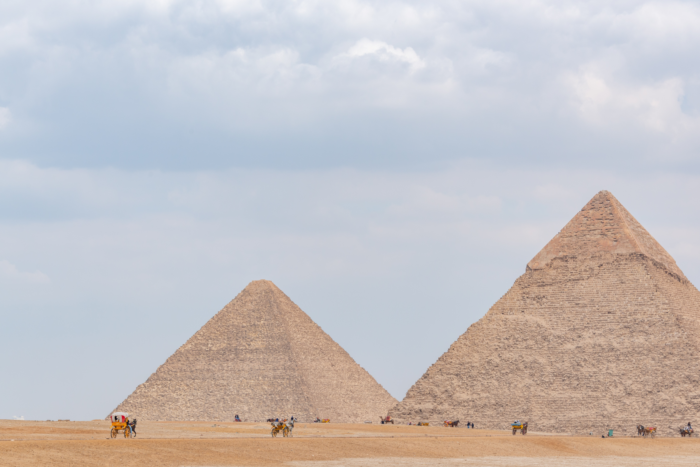

Welcome to my Blog

Taj Mahal
The Taj Mahal was commissioned by Shah Jahan in 1631, to be built in the memory of his wife Mumtaz Mahal, who died on 17 June that year, while giving birth to their 14th child, Gauhara Begum. Construction started in 1632, and the mausoleum was completed in 1648, while the surrounding buildings and garden were finished five years later.The imperial court documenting Shah Jahan's grief after the death of Mumtaz Mahal illustrates the love story held as the inspiration for the Taj Mahal.[16] According to contemporary historians Muhammad Amin Qazvini, Abdul Hamid Lahori and Muhammad Saleh Kamboh, he did not show the same level of affection to others as he had shown her while she was alive. He avoided royal affairs for a week due to his grief, along with giving up listening to music and dressing lavishly for two years. Shah Jahan was enamored by the beauty of the land at the south side of Agra on which a mansion belonging to Raja Jai Singh I stood. This place was chosen for the construction of Mumtaz's tomb by Shah Jahan and Jai Singh agreed to donate it to the emperor.

The Great Wall of China
he Great Wall concept was revived again under the Ming in the 14th century,[30] and following the Ming army's defeat by the Oirats in the Battle of Tumu. The Ming had failed to gain a clear upper hand over the Mongol tribes after successive battles, and the long-drawn conflict was taking a toll on the empire. The Ming adopted a new strategy to keep the nomadic tribes out by constructing walls along the northern border of China. Acknowledging the Mongol control established in the Ordos Desert, the wall followed the desert's southern edge instead of incorporating the bend of the Yellow RiverThis place was chosen for the construction of Mumtaz's tomb by Shah Jahan and Jai Singh agreed to donate it to the emperor.

Machu Picchu
Much of the farming done at Machu Picchu was done on its hundreds of man-made terraces. These terraces were a work of considerable engineering, built to ensure good drainage and soil fertility while also protecting the mountain itself from erosion and landslides. However, the terraces were not perfect, as studies of the land show that there were landslides that happened during the construction of Machu Picchu. Still visible are places where the terraces were shifted by landslides and then stabilized by the Inca as they continued to build around the area.[34] Terraces constructed overlooking the Urubamba River and many other springs provided fresh water for crop production and served more than 1,000 households.[35]
However, terrace farming area makes up only about 4.9 ha (12 acres) of land, and a study of the soil around the terraces showed that what was grown there was mostly

The Great Pyramid of Giza
In the past the Great Pyramid was dated by its attribution to Khufu alone, putting the construction of the Great Pyramid within his reign. Hence dating the pyramid was a matter of dating Khufu and the 4th dynasty. The relative sequence and synchronicity of events is the focal point of this method.
Absolute calendar dates are derived from an interlocked network of evidence, the backbone of which are the lines of succession known from ancient king lists and other texts. The reign lengths from Khufu to known points in the earlier past are summated, bolstered with genealogical data, astronomical observations, and other sources. As such, the historical chronology of Egypt is primarily a political chronology, thus independent from other types of archaeological evidence like stratigraphies, material culture, or radiocarbon dating.
The majority of recent chronological estimates date Khufu and his pyramid roughly between 2700 and 2500 BC.[